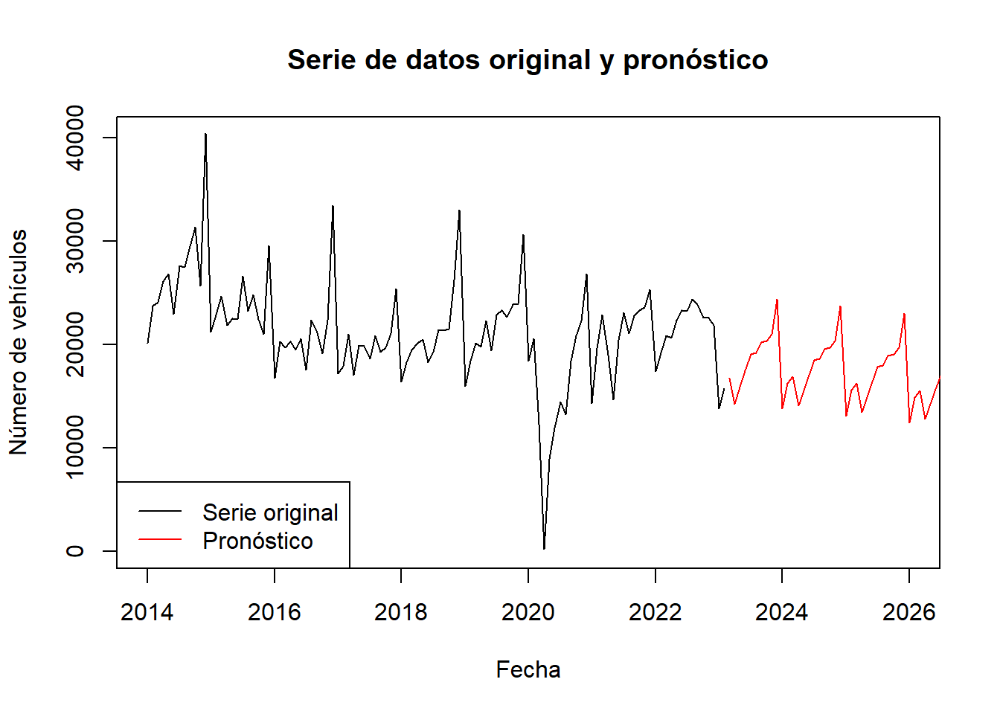

Chapter 6 Aplicación del Modelo Arima
6.1 Validación de Estacionariedad
Un modelo ARIMA requiere que la serie sea estacionaria. Se dice que una serie es estacionaria cuando su media, varianza y autocovarianza son invariantes en el tiempo.Esta suposición tiene un sentido intuitivo: dado que ARIMA usa retardos previos de series para modelar su comportamiento.
RECORDAR: En el paso anterior se observó graficamente que la serie original de la venta de vehículos tiene una tendencia y ademas no tiene media ni varianza constante.Con lo cual pudieramos afirmar que visualmente la serie pareciera ser NO ESTACIONARIA.
Para validarlo, hacemos el Test de Dickey Fuller:. Este test se basa en una regresión lineal que incluye la propia serie de tiempo y sus rezagos.Las hipótesis respectivas son:
Contraste de hipótesis:
H0: Serie No estacionaria: Hay raiz unitaria H1: Serie Estacionaria: No hay raiz unitaria
Tras realizar la prueba aumentada de Dickey-Fuller (ADF), obtenemos un p-valor = 0.01. Como el p-valor < 0.05, se rechaza H0. En conclusión, la venta de vehículos es una variable Estacionaria.
# Cargar el paquete tseries
library(tseries)
# Realizar prueba de raíz unitaria
adf.test(veh)##
## Augmented Dickey-Fuller Test
##
## data: veh
## Dickey-Fuller = -3.973, Lag order = 4, p-value = 0.0131
## alternative hypothesis: stationary6.2 Diferenciación
Dado que la venta de vehículos es una variable estacionaria, no se requiere diferenciar la serie.
6.3 Estimación del modelo Auto.arima
La función auto.arima() es una herramienta muy útil para ajustar modelos ARIMA automáticamente. La idea detrás de esta función es seleccionar automáticamente el mejor modelo ARIMA para una serie de tiempo dada, basándose en criterios estadísticos como el criterio de información de Akaike (AIC) o el criterio de información bayesiano (BIC).
La notación ARIMA(p,d,q)(P,D,Q)[m] se refiere a los parámetros del modelo ARIMA, donde:
p: orden de la parte autoregresiva (AR) d: orden de diferenciación (I) q: orden de la parte de media móvil (MA) P: orden de la parte estacional autoregresiva (SAR) D: orden de la diferenciación estacional (SI) Q: orden de la parte estacional de media móvil (SMA) m: número de períodos en una temporada
En el modelo ARIMA(1,0,0)(0,1,1)[12], el orden AR es 1, el orden MA es 0, el orden de diferenciación es 0, el orden de SAR es 0, el orden de diferenciación estacional es 1, el orden SMA es 1, y el número de períodos en una temporada es 12.
La interpretación de cada parámetro es la siguiente:
-El parámetro AR(1) indica que se está utilizando la observación más reciente y la observación anterior para predecir la siguiente observación en la serie.
-El parámetro MA(0) indica que no se está utilizando ningún término de media móvil para hacer la predicción.
El parámetro de diferenciación d=0 indica que no se aplicó ninguna diferenciación a la serie.
El parámetro de diferenciación estacional D=1 indica que se aplicó una diferenciación estacional de primer orden para corregir la estacionalidad en la serie.
El parámetro SMA(1) indica que se está utilizando la observación de hace 12 períodos y la observación de hace 1 período para predecir la siguiente observación en la serie.
En resumen, el modelo ARIMA(1,0,0)(0,1,1)[12] es un modelo que utiliza la observación más reciente y la observación anterior para predecir la siguiente observación en la serie, y también tiene en cuenta la estacionalidad con una diferencia estacional de primer orden y una media móvil estacional de orden 1.
#Corremos la función auto.arima:
autoarimaveh=auto.arima(veh)
autoarimaveh## Series: veh
## ARIMA(1,0,0)(0,1,1)[12] with drift
##
## Coefficients:
## ar1 sma1 drift
## 0.6613 -0.6929 -56.3415
## s.e. 0.0755 0.1143 32.4217
##
## sigma^2 = 9823446: log likelihood = -930.65
## AIC=1869.29 AICc=1869.72 BIC=1879.636.4 Validación de supuestos
Analizamos que los residuos sean Ruido Blanco (los residuos se distribuyen normalmente y no hay autocorrelación entre ellos).
Con la prueba de Ljung-Box, se evalúa si hay o no autocorrelación en los residuos:
Hipótesis H0: No hay autocorrelación de los residuos H1: Existe autocorrelación de los residuos
CONCLUSIÓN: Como el P-value (0.56) es mayor a 0.05 no se rechaza H0. En ese caso si se cumple la condición de los residuos, son ruido blanco (no se correlacionan los errores).
Box.test(autoarimaveh$residuals, lag = 20, type = "Ljung-Box")##
## Box-Ljung test
##
## data: autoarimaveh$residuals
## X-squared = 18.383, df = 20, p-value = 0.56226.5 Predicción corto plazo
# Generar pronósticos futuros para 4 años (48 meses)
pronostico <- forecast(autoarimaveh, h = 48)
# Graficar la serie original y el pronóstico
plot(veh, main = "Serie de datos original y pronóstico", xlab = "Fecha", ylab = "Número de vehículos", xlim=c(2014,2026), ylim = c(0, max(veh)))
lines(pronostico$mean, col = "red")
legend("bottomleft", legend = c("Serie original", "Pronóstico"), col = c("black", "red"), lty = 1) ## Calculo del AIC Y BIC
# Calcular el AIC y el BIC
aic <- AIC(autoarimaveh)
bic <- BIC(autoarimaveh)
# Mostrar los resultados
cat("AIC:", aic, "\n")## AIC: 1869.292cat("BIC:", bic, "\n")## BIC: 1879.6326.6 Evaluación del Modelo - MAE y RMSE
# Calcular las medidas de precisión
accuracy_arima <- accuracy(autoarimaveh)
# Obtener el MSE y el MAE
mae_arima <- accuracy_arima[1]
rmse_arima <- accuracy_arima[2]
# Mostrar los resultados
cat("MAE:", mae_arima, "\n")## MAE: -155.7058cat("RMSE:", rmse_arima, "\n")## RMSE: 2912.711